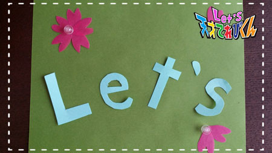
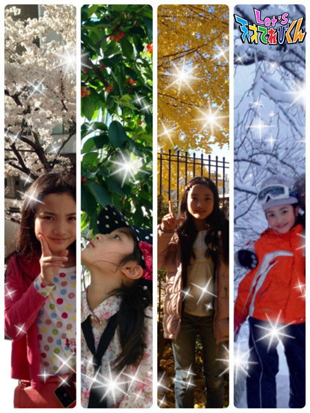

<<2015年2月 | トップページ | 2015年4月>>
2015年3月
４月から○○年生になります！［桐畑カレン］
こんにちは。
カレンです(*^^*)
私もいよいよ5年生！
高学年さんと呼ばれる学年になりました(^^)
教室も3階におひっこしで、運動場に遊びに行くのに、
少し時間がかかってしまうけど、窓から遠くの景色が見えるのがうれしいです♪
5年生になると、私の学校では夏にキャンプがあります！
みんなでお山に登って、カレーを作って、
キャンプファイヤーで歌って踊って、夜はおしゃべり。
今からとってもワクワクしています♪
それから、家庭科で調理実習が始まります。
今までは、食べるの専門！
お母さんがご飯を作っているのを見て、
横から 「 おいしくな～れ☆ 」 と魔法をかける係でした。
でも、これからは私も女の子らしく、調理実習で
「 このくらいできますわ。おほほほほ～。」
と言えるようにと思って、この前クッキーを焼いてみました♪
フォーク型のクッキーはわれちゃったけど、なかなかおいしくできました。
それから、運動会では5年と生6年生が一緒に組体操をします。
私は小さいから、ピラミッドの上に立つ係になるんじゃないかと、
今から心配しています。
ちゃんと立つことできるかなあ…とか、
重くて下になってくれている友達がつぶれないかなあ…とか(>_<)
私の学校の組体操って、すごいんですよ。
本当に本当にすごいんですよ！
速いテンポの曲だったり、ゆったりしたゆうがな曲だったり、
曲に合わせていろんな種類の技をします。
まるで1つの物語のようで、毎年みとれてしまうんです(^-^*)
「 私もいつかするんだ 」 と、あこがれていました☆
それが、いよいよ自分たちの番。
不安でもあるけど、楽しみのほうが大きいです(^^)
5年生になっても、楽しい思い出を作れる1年にしていきたいな、
と思っています(*^o^)／＼(^-^*)
そしてLet'sでは、茶の間戦士のみなさんといっぱい協力しあって、
地球を守っていきたいです＼(^^)／
ということで、これからもよろしくお願いします(*^^*)

一緒に～ Let's！！
投稿者:桐畑カレン | 投稿時間:18時45分 | カテゴリ：てれび戦士 | 固定リンク
4月から○○年生になります！［小澤竜心］
こんにちは！竜心です。
NHK横浜感謝祭、ありがとうございました！
会場いっぱいの茶の間戦士のみなさんが来てくれて、うれしかったです＼(^o^)／
横浜の街は、色がきれいでおもしろいお店がたくさんありました。
とってもにぎやかで、楽しかったです♪
さて、ぼくは 『 4月から5年生になります！』
5年生になったら楽しみなことが3つあります。
☆1つ目は、【 クラス替え 】です！
どんな友達が一緒になるのか、楽しみ～！！！！
また新しい友達ができるかな！？
5年なん組になるかな？気になるぅぅぅ！
☆2つ目は、【 先生 】です！
こわい先生や、おもしろい先生、やさしい先生……
どんな先生かな？
ぼくは、今の先生がとーってもおもしろいので、
このままがいいんですけどね…(*^▽^*)
☆3つ目は、【 委員会活動 】です！
学校行事のことをみんなで考えるのって、
たいへんそうだけど、楽しそう～o(^o^)o
計画委員かな……放送委員かな……
まだ考え中だけど、とにかく楽しみです♪
5年生は高学年なので、
下級生にやさしく、がんばりますＯ(≧∇≦)Ｏ
それでは～～
Let's！
投稿者:小澤竜心 | 投稿時間:18時45分 | カテゴリ：てれび戦士 | 固定リンク
4月から○○年生になります！[赤崎月香]
こんにちは ヽ(^▽^@)ノ
赤崎月香です。
いちご狩りに行って来ました～♪
すごく！すごく！
おいしかった！！！！！Ｏ(≧▽≦)Ｏ
もう食べられないよ～( ×m×)…
ってぐらい、
お腹いっぱい食べたのに、
おみやげにいちごを買って帰りました♪
☆。・:*:・°★,。・:*:・°☆
もう春ですね～
春といえば、卒業や入学の季節です。
★ ご卒業＆ご入学 ★
☆ おめでとうございます ☆
私は、4月から中学2年生になります！
2年生になると 「 勉強も部活も大変になるよ 」
と、先輩から聞きました・・・
大丈夫かなぁ・・・(((-_-;)))
不安だなぁ・・・
なんて思ってたけど、
今はまったく気にしていません！←キッパリ！
だって、今気にして考えたって、
大変になるかどうかは、自分次第だと思うから！
中学生になったときも不安だったけど、
この1年、勉強も部活もがんばったもん♪
勉強は、すごくがんばりました (￣‥￣)=3
だから、2年生になっても大丈夫！！！
でも1つ…
さみしいことがあります・・・o(;△;)o
それは、クラス替えです。
新しいクラスで知らない子と話せるかなぁ
仲良しのお友達と同じクラスがいいなぁ～
先生にお願いしようかなー
誰がクラスを決めているのかな？
まっ！これもなるようになるか～♪
誰とでもお友達になれるのが、わたしのとりえだったわ～
大丈夫♪大丈夫♪o(*^▽^*)o
未来は、わからない
過去は変えられないけど、未来は変えられる！です☆
学校行事にいっぱい参加するぞ！(*￣0￣)/
新学期、がんばろう！
またね～ヾ(*'-'*)
投稿者:赤崎月香 | 投稿時間:18時45分 | カテゴリ：てれび戦士 | 固定リンク
4月から○○年生になります！［笹原尚季］
こんにちは！
みなさん、お元気ですか？
今回は、「4月から5年生になります！」 です。
あんなに小さかったぼくも、こんなに大きくなりました！
幼稚園～今まで。
あまり変わらないかな？
身長は、36センチ伸びたんだけどね(._.)
5年生になって楽しみなことは、2つあります。
☆1つ目は、委員会活動。
委員会活動は、5年生から始まるので一生懸命がんばりたいです(^^)
☆2つ目は、運動会。
特に、運動会の組み体操が楽しみです(o^^o)
委員会活動は楽しみだけど、その分大変なので、ちゃんとできるか心配です。
。・°°・(＞_＜)・°°・。
ほかにも、すごく仲のいい友達と離れてしまうかもしれないのが不安です。
でも、また新しいクラスの中で友達をつくるのが楽しみでもあります♪♪
早く5年生になりたい！！
投稿者:笹原尚季 | 投稿時間:18時45分 | カテゴリ：てれび戦士 | 固定リンク
4月から○○年生になります！［杉本瑛］
大家好！（中国語で、「 みなさん、こんにちは！」 です。）
杉本瑛です！
家族のために、
溶かしたチョコをかけてイチゴをトッピングした
春らしいケーキを作りました！
イチゴをトントントン(*^_^*)
ケーキ入刀（笑）
イチゴの酸味とチョコの甘さが絶妙にマッチして、とてもおいしかったです（＾Ｏ＾☆♪)
さて、今回のお題は、「4月から○○年生になります！」です。
4月から、私は5年生になります！
まず、5年生になって 【 楽しみなこと 】
それは、家庭科の授業が始まることです！
わーい*\(^o^)/*
私はお料理やお掃除が好きなので、とっても楽しみなんです～！
あと、クラブ活動が始まります☆
私の希望の家庭科クラブは、毎年人気でじゃんけんで決めるんです。
じゃんけんに勝ってクラブに入れるかな～☆彡
次に 【 不安なこと 】
それは、スキー。
5年生なったら、スキーをするんですよ！！
コケまくらないか心配（笑）
コケても雪でフカフカだけどね。
こんな私ですが、がんばって前に突き進んで行くので、
これからも応援よろしくお願いします！
投稿者:杉本瑛 | 投稿時間:18時45分 | カテゴリ：てれび戦士 | 固定リンク
4月から○○年生になります！［林武尊］
どうも！ 林武尊です。
花粉症の季節がやって来ましたね～。
ぼくは花粉症なんで、この時期はつらいです(>_<)
1番ひどかったのは、学校にティッシュ箱を持って行ったとき…
マスクをつければいいんだけど、
つけるとメガネがくもって視界が悪くなるので、
あまりつけたくないんです。
でも最近は、とてもつらいので、マスクつけて学校に行ってます（-◎□◎-）
さて、本題へ♪
ぼくが新しい学年になって楽しみにしていることは、クラブでバスケをすること！
4年生のときは、バスケクラブだったけど、
5年生のときは、別のこともやってみたくて、
料理クラブに入りました。
でもやっぱりバスケが楽しいので、復活することしました (o^^o)
もうひとつの楽しみは、夏の移動教室です。
群馬に行く予定です！
今から、と～っても楽しみです♪
投稿者:林武尊 | 投稿時間:18時45分 | カテゴリ：てれび戦士 | 固定リンク
4月から○○年生になります！［飯島緋梨］
こんにちは！飯島緋梨です！！
この前、NHK横浜放送局のイベントに行きました！
登場したとき、
想像よりもおおぜいの人がいて、
すごくきんちょうしました。
遊びに来てくれたみなさん、
ありがとうございました（≧∇≦）
帰りは、中華街で遊んで、
おいしいショーロンポーとごま団子を食べました。
ごま団子は、モッチモチでゴマがおいしくて、なんと4個も食べてしまいましたo(^_^)o
中華街に行ったときは、ぜひ食べてみてくださいね♪
トリックアートのミュージアムにも行きました。
不思議過ぎて、楽しかったですo(^_^)o
さて、今回のテーマは、
【 4月から6年生になります！】 （≧∇≦）
わたしが楽しみにしていることは、委員会！
わたしの学校では、
代表委員・放送委員・ 体育委員・集会委員・飼育委員などなど、
たくさんの委員会があります！
5年生のときは、
放送委員をしていました！（≧∇≦）
放送委員は、すごく楽しかったけど、
6年生になる今年は、集会委員になりました！
集会委員は、ゲーム説明や司会進行をしたりする委員会で、
いつも集会のとき6年生と5年生が協力している姿を見て、
私も集会委員をやってみたいと思いました！
しかも、お友達と一緒に集会委員になることができました(*^_^*)
はじめての集会委員だけど、
5年生と力を合わせて、楽しい集会ができるといいなと思います！！
みんなも委員会、頑張ってね(⌒▽⌒)
Ｌet's 委員会活動⊂((・x・))⊃
投稿者:飯島緋梨 | 投稿時間:18時45分 | カテゴリ：てれび戦士 | 固定リンク
4月から○○年生になります！［辻村晃佑］
どうも辻村晃佑です！！
この前、初めてブラウニーを作ってみました！(ﾟ∀ﾟ)

複雑な工程などなく、
オーブンがあれば誰でもできる
とてもつくりやすいお菓子でしたo(^▽^)o
できあがったブラウニーを食べたら、
甘さが足りなかったので、
もうちょっと砂糖の量を多くしてもよかったかな？！
次は、マドレーヌあたりの小さめの焼き菓子を作ってみようかな(*´ω｀*)
お菓子作り、楽しい～～～！！
いや～
こんな僕ですけど、4月から2年生です！（中学だよ）
2年生になったら、後輩ができるのかー
今まで、その後輩だったけど、
いざ先輩になると、どうすればいいか不安だな～～
でも、クラス替えは楽しみです！
知らない人と同じクラスになるのは、とてもワクワクするからです。
中学1年は思い出に残る1年にできたから、中学2年も思い出に残る1年にしたいな～
2年生になっても、がんばりま～す！
投稿者:辻村晃佑 | 投稿時間:18時45分 | カテゴリ：てれび戦士 | 固定リンク
「どちゃもんDEキャラ弁」レシピ大公開！
広島どちゃもん・ぷうかと福岡どちゃもん・ちゃっちゃくちゃらから、どちゃもんキャラ弁のレシピが届きました。
ぷうか＞茶の間戦士のみんな、ひさしぶりじゃねー。
ちゃっちゃくちゃら＞「どちゃもんDEキャラ弁」見てくれたと？ばりおいしそーやろ。
ぷうか＞作り方を特別に教えちゃるけえ、作ってみんさいや。
●ぷうかキャラ弁
（※レシピはどちゃもん本体のみ。まわりのおかずは含まれません）
＜材料＞
じゃがいも（中）1個、パプリカ1/4個、にんじん1/4本、薄焼き卵1枚、マヨネーズ大さじ2、かに風味かまぼこ1本、ブロッコリー適量、スライスチーズ適量、のり適量、ハム適量、塩、コショウ
＜作り方＞
【土台】 じゃがいもをゆで、熱いうちに皮をむいてつぶす。粗熱が取れたら、マヨネーズ・塩・こしょうとあえてポテトサラダを作る。
【頭・足・しっぽ】 パプリカの種を除き、ぺティーナイフで顔・足・しっぽの形にカットする。
【目】 スライスチーズを白目の形にカットする。
【眉毛・黒目】 のりをハサミで眉毛と黒目の形にカットする。
【くちびる】 ハムをくちびるの形にカットする。
【ひれ】 にんじんを薄く切り、ひれの形にカットしてゆでる。
【着物】 ブロッコリーの先端を包丁で切る。かに風味かまぼこを細く裂く。のりをハサミで細長く切る。スライスチーズを細長く切る。
ポテトサラダをラップで包んで形を整え、ぷうかの土台を作り、ラップをはずして弁当箱に入れる。
その上に、薄焼き卵、チーズ、のり、ブロッコリー、かに風味かまぼこの順にのせて着物を作る。
パプリカで作ったひれと頭を順にのせ、その上にのり・チーズ・ハムを置いて顔を作り、かに風味かまぼこのヒゲをつける。
パプリカで作った足としっぽをつけて完成！
●ちゃっちゃくちゃらキャラ弁
（※レシピはどちゃもん本体のみ。まわりのおかずは含まれません）

＜材料＞
ごはん120g、梅干し（中）2粒、スティックチーズ1本、ハム1/4枚、のり1/6枚、スライスチーズ1/8枚、かに風味かまぼこ適量、薄焼き卵適量、にんじん適量
＜作り方＞
【土台・頭の梅の花】 梅干しの種を除き、1粒は粗みじん切り、もう1粒は花びらのような丸形4枚にカットする。
【髪・顔・帯】 のりをハサミで、髪・顔・帯の形にカットする。
【しめ縄】 スティックチーズを、ペティーナイフを使って、しめ縄のように形作る。
【手・めしべ】 スライスチーズを、つまようじを使って、手と、頭の梅の花のめしべの形に切る。
【ほっぺ】 ハムを、ストローで2枚くりぬく。
【着物のえり】 ハムを、幅5㎜長さ2㎝の短冊形2枚に切る。かに風味かまごこを細くさく。
ごはん40gをラップで包み、楕円形に握る。
残りのごはんに、粗みじん切りの梅干しを混ぜ合わせ、ラップに包み着物の形を作る。
ラップをはずし、梅ごはんが胴体、楕円形のご飯が頭になるよう、弁当箱に入れる。
それぞれのパーツをごはんにのせる。
薄焼き卵をストローで丸くくりぬき、その上に小さな長方形に切ったにんじんをのせ、のりとチーズで目をつけて頭の梅の花の横にのせる。
チーズと梅を使って、帯の模様をつけて完成！
ぷうか＞うちの体はポテトサラダで作っとったんじゃね。
ちゃっちゃくちゃら＞うちは梅の好いとーから、梅ご飯で作っちもらえてなんやかうれしか〜。
ぷうか＞どうじゃろ、わりかしみやすいじゃろ？
ちゃっちゃくちゃら＞他のどちゃもんのも考えちみるんも楽しかね。
ぷうか・ちゃっちゃくちゃら＞Let’sどちゃもんDEキャラ弁！
投稿者:未来人L | 投稿時間:18時40分 | カテゴリ：その他 | 固定リンク
4月から○○年生になります！［齋藤茉日］
こんにちは～
茉日です^ ^
今回のテーマは、『 4月から○○年生になります！』 です！！
私は、4月から中学2年生になります( ´ ▽ ` )ﾉ
もう 「 先輩 」 と呼ばれる立場なんですね！
信じられないです>_<
今年の目標は、「 テスト勉強は、コツコツと！！」 です^ ^
1年生のときのテスト勉強のやり方は…
【 テスト期間になったら、黙々と毎日テスト勉強をする！】
というやり方でした！
でも2年生からは…
【 学校から帰ってきたら、5分でもいいから勉強しよう！】
というやり方に変えよう！！
と思っています(o^^o)
中学1年生のときは、
わからないことも多くて勉強も探りながらやってきました！
でも、テスト期間にたくさんやるよりも、
毎日コツコツ復習しながら勉強したほうがいいのでは！？
と思ったので、めげずに頑張っていこうかな！
来年は、中学3年生！ということは受験生！！
↑まだ中2にもなってないんですけど(･_･;笑
去年よりも、もっと気合を入れて頑張ろう*\(^o^)/*
そして、Let's天才てれびくんのてれび戦士としても頑張ります！！！
よろしくお願いします(o^^o)
それでは、今回はこのへんで(o^^o)
またね( ´ ▽ ` )ﾉ
投稿者:齋藤茉日 | 投稿時間:18時54分 | カテゴリ：てれび戦士 | 固定リンク
私の好きなニッポン［瀧澤翼］
こんにちは！
以前、英検の話をしましたね。
お正月から英検5級の問題集に取り組み、
まだ教わってないところは、
お姉ちゃんに教えてもらったりしました。
そして、1月末に英検5級の試験に挑みました。
できばえは微妙でしたが、
受かることを祈りながら待ち続け…
試験当日から3週間ほどたって、結果が届いていました！
結果は…

見事、合格！！
50点満点42点という微妙な結果でしたが、次は4級にチャレンジしたいです！！
さあ、今回のテーマは 「 私の好きなニッポン 」 です。
僕が好きなニッポンは、おすし・おにぎり・おやき、
そして…しゃぶしゃぶ！！
そう、ニッポンの食べものです！！
和食がユネスコ無形文化遺産に登録されましたよね。
それだけ、日本の食文化が世界的にも知られているということです。
和食が世界中で評価されているって、すごいことですよね＼(^_^)／
この間、家族でしゃぶしゃぶに行ってきました！
自分でお肉をしゃぶしゃぶすると楽しいし、
なんといっても、食べるとほっぺが落ちるくらいおいしかったです！
しゃぶしゃぶだけじゃなく、
もっと日本の食文化を世界に発信していって、
いろんな人においしい和食を食べてもらいたいですね。
Let's ニッポン！！
投稿者:瀧澤翼 | 投稿時間:18時45分 | カテゴリ：てれび戦士 | 固定リンク
私の好きなニッポン［赤崎月香］
こんにちは ヽ(^▽^@)ノ
赤崎月香です。
バレンタインにたくさんのチョコやお菓子をいただきました♪
みんな、ありがとう Ｏ(≧▽≦)Ｏ
バレンタインの本当の由来って、
日本に定着してる感じとちょっと違うって聞いたことがあります・・・
まぁ、おいしいお菓子が食べられるなら
ちょっと違ってもいいや～♪ (￣∇￣*)ゞエヘヘ
☆。・:*:・°★,。・:*:・°☆
『 私の好きなニッポン！！！』
さっき書いた、
ちょっと違うバレンタインも私の好きなニッポンかな～♪ (＿д＿)。ｏ０○
東京に来ると、たくさんの外国のかたを見かけます。
「 侍 」 や 「 富士山 」 などの絵や文字が書かれたＴシャツを着てる人もいます。
日本人から見たら、かっこ悪いなぁ・・・って、
思う人もいるかもしれません・・・
でも！！！
よく考えると、
富士山は、世界文化遺産だし。
和食や和紙だって、ユネスコ無形文化遺産だし。
侍だって、すごくかっこいい。
ニッポン☆かっこいい☆
そう！！！
ニッポン、かっこいいんです！！！(￣▽￣)b
☆。・:*:・°★,。・:*:・°☆
私が茶道を始めたのも
日本の文化がすてきだと思ったからです。
花道や着付けもしてみたいなぁと思うことがあります。
あ！そうだ！
和紙は、世界の名画の修復に使われると聞いたことがあります。
和紙・・・作ってみたい！！！
そういえば、お父さんとお母さんは、富士山に登ったことがあるそうです。
富士山・・・登ってみたい！！！
ニッポン、全部好き！！！(*^・^*)♪

でもでも、まだまだ知らないニッポンが
いっぱいあるはず・・・
ニッポンのいろんなところに行ってみたいなぁ
またね～ヾ(*'-'*)
投稿者:赤崎月香 | 投稿時間:18時45分 | カテゴリ：てれび戦士 | 固定リンク
私の好きなニッポン［笹原尚季］
こんにちは。
もうすぐ春♪
暖かい日差しが待ち遠しいですね！
さて、今回のお題は、
「 私の好きなニッポン 」 です。
たとえば、日本の昔からあるものは、すばらしいなあと思います。
桜とか、富士山とか、神社やお寺もきれいですね。
色あざやかというのではなく、
まわりの景色と一緒になって、しっくりくる感じが好きです(^^)
あと僕は、なによりもおみそ汁、そば、おすしなどの
和食が本当に大好きです。
日本に生まれて幸せ～*･゜ﾟ･*:.｡..｡.:*(o^^o).｡. .｡.:*･゜ﾟ･*
投稿者:笹原尚季 | 投稿時間:18時45分 | カテゴリ：てれび戦士 | 固定リンク
私の好きなニッポン［原田明莉］
★Hello★
あかりですー！
原田のほうです！
このあいだ、とてつもなくビックリしたことがおきました！！！
そのこととは…
飯島ちゃんが前髪をきったことです！
緋梨ちゃんが明莉と同じくらいの前髪のながさ！
それにしても『 【 緋梨（あかり）ちゃん 】 が 【 明莉（あかり） 】 と ～』って聞きづらい
いつも2人で話してるときは、緋梨ちゃんと呼ぶときもあるので、
あかり、あかり、あかり…
もぅ、話しづらっ って、なるんですよ！！！
いやー、
それにしても似合うー♪かわいー♪♪
と、思いきや、
きってませーーーん！！！
その前に、
緋梨ちゃんが『 緋梨、美容院行くんだー！』と言っていたもんで…
本気でだまされちゃいました\(//∇//)\
それでは、本題に入ります！
今回のお題は…
☆私の好きなニッポン☆です！！！
エエットデスネェ、
ワタシ ノ スキナ ニッポン トハ（笑）
3つあります！
まず、
学校に行けて、ご飯を食べられて、
本当に当たり前のことができるって、本当に幸せです！
この日本にうまれて、本当に幸せです！
次に格闘技が盛んなこと！！！
わたし、空手以外にもいろんな格闘技が大好きなんですよ！
日本にいるからこそ、いろんな格闘技をみることができます！！！
そしてそして、3つ目は…
食べ物がおいしーーーーーーーことです！！！
その中でも、
やっぱりやっぱり
日本といえばぁぁぁぁーーー
お寿司ーーーーーーーーーーー！
お寿司って、本当においしいです！
文章を書いてたら、食べたくなって食べちゃいましたー♪
これからも、日本大好き！！！
投稿者:原田明莉 | 投稿時間:19時20分 | カテゴリ：てれび戦士 | 固定リンク
私の好きなニッポン［林武尊］
こんにちは、武尊です。
最近、学校でクイズがはやり始めています。
突然ですが、問題です。
みなさんは、この問題が解けるでしょうか？
下の式に1本線を加えて、答えを550にして下さい。
この問題を作るときには、ずいぶん苦労しました。
でも、クラスの友達にスラスラと解かれちゃいました… （?＿?；）
答えは、のちほど！
今回のお題は、「 私の好きなニッポン 」
ぼくの日本の好きなところは、
みんな親切できちんとルールやマナーを守るところです。
まぁ、守らない人もいるけど、ほぼみんなマナーを守っていると思います！
人がたくさん並んでいても、前の人を抜かさない。
くつは、ちゃんとくつ箱に入れる。
そして、なにより親切です！
ものが落ちていたら拾って届けてくれたり、
道に迷ったりしたときは、聞けばすぐ教えてくれます^_^
ぼくはよく落し物をするんだけど、
必ず、だれかが警察や落しものを預ける場所に届けてくれて、
とても助かりますσ(^_^;)
だから、ぼくも落としものを見つけたら、すすんで届けます(￣^￣)ゞ
親切でちゃんとルールやマナーを守る、そんな日本が大好きです＼(^o^)／
それでは、上の問題の正解です。
答えは、最初の＋の左上にななめの線を書くと…
545になって、普通に計算すると550になります。
みんな、解けたかな？？

投稿者:林武尊 | 投稿時間:18時54分 | カテゴリ：てれび戦士 | 固定リンク
私の好きなニッポン［飯島緋梨］
みなさん！こんにちは^o^
飯島緋梨です。
最近、インフルエンザが
学校で流行っています。
緋梨は、予防接種をしてるのに、
毎年インフルエンザになってしまいます(>_<)
でも今年こそは、大丈夫かも！
みなさんも気をつけてくださいね(^_^)
今回のお題は、「 私の好きなニッポン！」
私が好きな日本は、季節があること。
春は桜が咲いて、
夏はとっても暑くって、
秋は紅葉がきれいで、
冬は寒いけど雪が降ったら楽しい♪

未来でも、この四季が続くといいなと、私は思います^_^
それから！
日本には、梅干しがある(^O^)／
私は、梅干しが大大大好き！
すっぱくて、しょっぱいのが
たまらなくおいしい(^｡^)
そんな梅干しは、なんと古代からあったそうです！
でも昔は、食べ物ではなく、
漢方薬として使われていたんだって！
そして、最近ハマっているのは折り紙！
本を見て、折り紙を折ってみました。
いろいろと種類があって楽しい♪
もっと作りたいと思います（≧∇≦）
Ｌet's 折り紙(o^^)
投稿者:飯島緋梨 | 投稿時間:18時45分 | カテゴリ：てれび戦士 | 固定リンク
私の好きなニッポン［小澤竜心］
こんにちは！竜心です。
ぼくは、日本が大好きです。
『 ぼくの好きなニッポン 』 といえば、【 お米 】です。
炊きたてのご飯に卵をかけて食べるのが、大好きです。
それとお寿司ー(*^O^*)
とくにマグロが好きです。
炙りマグロは、もっと好きです♪
それから、やっぱりニッポンといえば……
『 ＫＡＢＵＫＩ 』 歌舞伎です！！！
2月20日は、歌舞伎の日でしたね～(*^▽^*)
日本には、歌舞伎専門の劇場 【 歌舞伎座 】 があります。
1年中、歌舞伎の公演が行われているんですよー！
初日は、『 本日初日 』 の垂れ幕が下がるので、
今日から新しい公演が始まるんだなって、一目でわかります。
台詞の調子がおもしろいし、見得（みえ）をきるところや、
立ち回りで激しいアクションをするのが、かっこよくてたまりません！
それから、舞台の背景や着物の柄で、日本の四季を表しているんです。
日本には、春夏秋冬の四季があって、それぞれの季節でいろんな日本が楽しめる♪
歌舞伎には、日本がたくさん詰まってます。
ぼくは、そんな 【 歌舞伎 】 が大好きです(*≧∀≦*)
それでは、いよぉ～～ Let's！
投稿者:小澤竜心 | 投稿時間:18時45分 | カテゴリ：てれび戦士 | 固定リンク
私の好きなニッポン［杉本瑛］
みなさま、ご機嫌うるわしゅう。杉本瑛です！
今回のお題は、『 私の好きなニッポン 』 です☆彡
私の好きなニッポンは、【 日本舞踊 】 です。
私が日本舞踊を始めたのは、「 マツケンサンバ 」 や
市川染五郎さんが昔やっていた 「 いざやカブかん 」 を見て、
自分もやりたくなったからです。
日本舞踊のどんなところが好きかというと、
それぞれの型や手の動きがとてもきれいなところです（≧∇≦）
華やかな扇子を羽子板や笠、門松など、いろいろなものに見たてて踊ります。
新しい振り付けを習うたびに、
こんな表現もできるんだって思って、踊るのが楽しくなってきます！
ちなみに、私が使ってる舞扇は、全てひいおばあちゃんからのプレゼント！
ひいおばあちゃんは、日本舞踊の名取さんなの！
そして、曲もいいんですよ。
私が習っている日本舞踊は地唄という古風な曲にあわせて踊るのですが、
聴いていると落ち着いてきます。
1曲全部踊ると、その曲の物語の世界がわかった気がして、
違う世界を旅したような気分になります(*^_^*)
みなさんの好きなニッポンは、なんですか？
投稿者:杉本瑛 | 投稿時間:18時45分 | カテゴリ：てれび戦士 | 固定リンク
私の好きなニッポン［辻村晃佑］
どうも辻村です！
この前、お母さんと小麦粉をまぶしたお肉に卵とパン粉をつけて、
とんかつを作るのを手伝いました。
手伝って作ったとんかつは、いつもよりおいしかったです！！ヽ(*´∀｀)ノ
さて本題です。
『 ぼくの好きなニッポン 』 は、【 食文化 】 です！(ﾟ∀ﾟ)
ジャパン ニハ スシニ テンプラニ ホカニモ イロイロナ タベモノガ アリマス
ぼくが好きなとりの照り焼きなど、日本の料理はなんでもおいしいです。
そのおいしい日本の料理は、今、世界中にあります。
インターネットで探せば、いろいろな国で日本料理店が見つかります。
そのことを思うと、日本は料理のおいしい国なんだなって思います(*´ω｀*)
ぼくは、いつか日本の料理でいろいろな国の人と交流したいなぁと思います。
投稿者:辻村晃佑 | 投稿時間:18時45分 | カテゴリ：てれび戦士 | 固定リンク
私の好きなニッポン［齋藤茉日］
こんにちは～
茉日です^ ^
今回のテーマは、
『 私の好きなニッポン 』 です！
よく考えてみると、
ニッポンならではのよいところって、たくさんありますよね？(o^^o)
その中でも、私が思うニッポンのよさは
『 日本人の礼儀！』
だと思います。
例えば…
★ものを落としたとき、誰かが拾ってくれる
★挨拶するときのお辞儀
★ご高齢のかたに席を譲る
★食べる前のいただきます
日本人のあいさつするときに頭を下げることとかって、
日本ならではのとてもよいところではないでしょうか？
私は、そんなニッポンが好きです！
日本の文化は、中国から伝わってきたものも多いけれど、
それを日本人なりに変えたところがよさだと思います！！！
これからも、そんな日本を受け継いでいきたいです！！
みなさんも日本のいいところをたくさん見つけてみましょう！
それでは♪
またね♪
投稿者:齋藤茉日 | 投稿時間:18時54分 | カテゴリ：てれび戦士 | 固定リンク
私の好きなニッポン［小西憧弥］
こんにちは！憧弥です(^-^)/
この冬は、まだスキーに行けてないです(>_<)
温泉付きのところに家族で行きたいなー。
この写真は、2歳の憧弥です！
はじめて、パンダちゃんスキーをはいたときだって(^^;;
今回のお題は、「私の好きなニッポン」
ニッポンに生まれてよかったなぁって思うのは、和風だしがあること！
和風だしだとキツネうどんが1番なんだけど、
それ以外でも、だしのにおいがするものは大好き！
だしで炊いた高野豆腐とかも好き（≧∇≦）
この前、1人キャンプに挑戦したとき、タカさんにおみそ汁の作り方を教えてもらいました。
家では、お母さんがだしを入れておみそ汁を作るらしいけど、
タカさんに教えてもらったのは、だしナシだったの。
すっごくおいしかったから、家でも3回くらい作ってあげました！
家族みんなおいしいって、よろこんでくれました(^_^)v
あとニッポンといえば、富士山！
はっきりきれいに見えると、うれしくなります。いやされます。
家族で車に乗ってて、富士山がきれいに見えると、
運転しているパパ以外のみんなの写真を撮りまくります(^^)
ニッポンはきれいだし、安全だし、大好きです！
投稿者:小西憧弥 | 投稿時間:18時45分 | カテゴリ：てれび戦士 | 固定リンク
私の好きなニッポン［桐畑カレン］
こんにちは。
カレンです(*^^*)
桃の節句ですね♪
おばあちゃんの家で、「 おひなさま 」 をかざるお手伝いをしてきました(^o^)

こんな風に私たちの住んでいるニッポンには、
四季があって、季節の行事があって、季節の食べものがあって、
とってもすてきなところだなと思います！
そんななかで、『 私の好きなニッポン 』 は…
「 ニッポンのマンガ 」 です(*^^*)
私には、家族で外国に行くと必ず行きたい場所があるんです。
それは、本屋さん。
本屋さんには、日本のマンガがたくさん並んでいます。
マンガは外国の言葉で書かれていて、ちがった感じにみえるのがおもしろいです。
言葉はわからないけど、絵を見るとなんとなくわかるのもマンガのいいところ(^^)
外国なのに日本のものがあるって、ワクワクしませんか？
しかも、それが人気だなんて♪
ほこらしい気分になります(*^^*)
日本のマンガが外国で人気がある理由は、
★絵がきれい
★お話しが長く続いていくから、次はどうなるんだろう？という楽しみな気持ちを持てる
★ジャンルが多い
からだそうです。
日本の
★真面目なところ
★せんさいで器用なところ
★想像する力とそれを作っていける力があるところ
★相手に喜んでほしい、お・も・て・な・し・の心
なんかが関係しているのかもしれませんね(^^)
大好き！ニッポン！
投稿者:桐畑カレン | 投稿時間:18時45分 | カテゴリ：てれび戦士 | 固定リンク
○○でテンション上がる〜♪［笹原尚季］
最近、すごく寒いですね。
僕が住んでいる埼玉は、この前初めて雪が積もりました。
雪が積もったので、友達と雪合戦をしました。
そして、そのあとに雪かきもしました。
いっぱい汗をかいたけど、楽しかったです♪
さて今回は、「◯◯でテンション上がる～♪」です。
僕は友達とバスケをして遊んだりするとテンション↑↑です。
でも、それよりもテンションが上がるのは、かわいい動物とふれあうことです。
犬や猫だったらなでたり、
亀などの水の中のいきものには、
おやつ（水の中のいきもの用のおやつ）をあげたりすることです。
かわいい～～～☆☆☆
投稿者:笹原尚季 | 投稿時間:18時45分 | カテゴリ：てれび戦士 | 固定リンク
ページの一番上へ▲